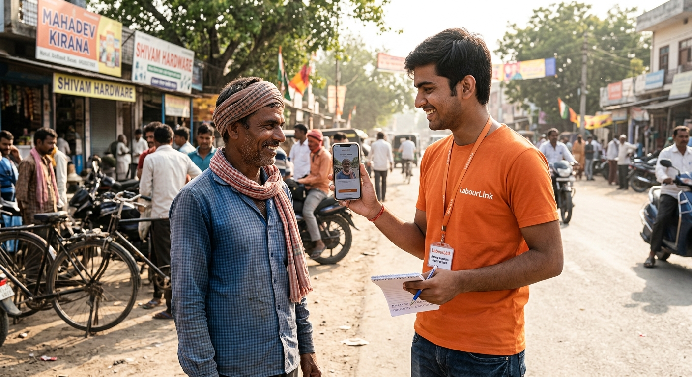

Our mission
LabourLink is an independent startup initiative from Greater Noida. We're digitising the labour chowk — making daily-wage workers discoverable beyond the street corner, while keeping the process simple and human.

How it works
No app, no smartphone needed. Keep standing at the chowk as usual — we just also call you when work comes in. Extends your reach for free.
Post a need online instead of driving to a chowk. We send you a confirmed, reviewed worker — perfect for households, students and small businesses.
Our team is the trusted middle layer — calling, confirming and coordinating so both sides get a reliable result.
FAQ
No. Workers only need a basic phone. We handle everything digital on their behalf.
Post before 8 PM and we confirm a worker for the next day by 9 PM.
Payment is made directly between you and the worker, as agreed. LabourLink does not handle money.
Currently Greater Noida — Knowledge Park, Kasna, Greater Noida West and the Sector 62 belt.